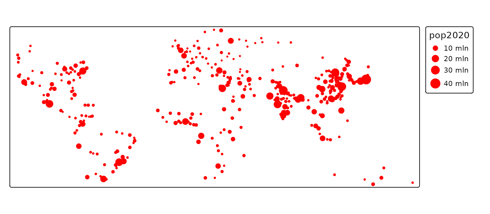
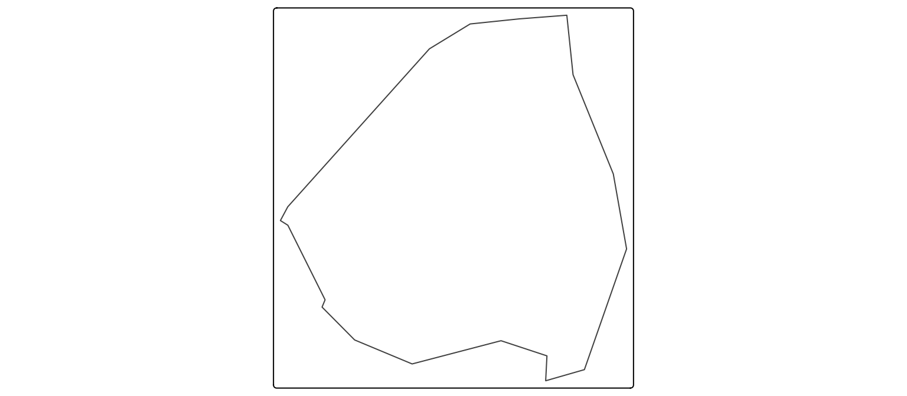

Basemaps
Mapbox offers several basemap providers, namely:
tmap_providers()
#> [1] "OpenStreetMap" "OpenStreetMap.DE"
#> [3] "OpenStreetMap.France" "OpenStreetMap.HOT"
#> [5] "OpenTopoMap" "Stadia.AlidadeSmooth"
#> [7] "Stadia.AlidadeSmoothDark" "Stadia.OSMBright"
#> [9] "Stadia.Outdoors" "Stadia.StamenToner"
#> [11] "Stadia.StamenTonerBackground" "Stadia.StamenTonerLines"
#> [13] "Stadia.StamenTonerLabels" "Stadia.StamenTonerLite"
#> [15] "Stadia.StamenWatercolor" "Stadia.StamenTerrain"
#> [17] "Stadia.StamenTerrainBackground" "Stadia.StamenTerrainLabels"
#> [19] "Esri.WorldStreetMap" "Esri.WorldTopoMap"
#> [21] "Esri.WorldImagery" "Esri.WorldTerrain"
#> [23] "Esri.WorldShadedRelief" "Esri.OceanBasemap"
#> [25] "Esri.NatGeoWorldMap" "Esri.WorldGrayCanvas"
#> [27] "CartoDB.Positron" "CartoDB.PositronNoLabels"
#> [29] "CartoDB.PositronOnlyLabels" "CartoDB.DarkMatter"
#> [31] "CartoDB.DarkMatterNoLabels" "CartoDB.DarkMatterOnlyLabels"
#> [33] "CartoDB.Voyager" "CartoDB.VoyagerNoLabels"
#> [35] "CartoDB.VoyagerOnlyLabels" "Thunderforest.OpenCycleMap"
#> [37] "Thunderforest.Transport" "Thunderforest.TransportDark"
#> [39] "Thunderforest.SpinalMap" "Thunderforest.Landscape"
#> [41] "Thunderforest.Outdoors" "Thunderforest.Pioneer"
#> [43] "Thunderforest.MobileAtlas" "Thunderforest.Neighbourhood"
tm_shape(metro) +
tm_dots(size = "pop2020", fill = "red")+
tm_basemap("ofm.liberty")
#> [basemaps] Tiles from "ofm.liberty" at zoom level 2 couldn't be loaded
#> This message is displayed once per session.
Note that this default basemap from Open Free Maps also renders the buildings in 3d!
tm_shape(NLD_dist[NLD_dist$code == "WK093500", ]) +
tm_borders() +
tm_basemap("ofm.liberty") +
tm_maplibre(pitch = 60)